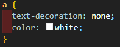
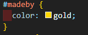
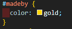
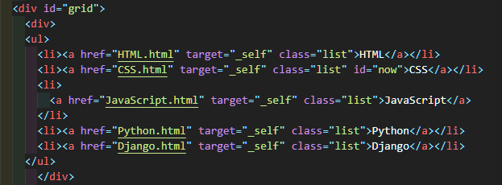
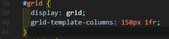

1.CSS의 의미와 구조
CSS는 Cascading Style Sheets의 약자로, HTML의 요소들이 외부에 어떻게 표현되는가를 정의할 때 사용하는 언어이다.
약간 차이점이 존재하겠지만, python이나 c++과 같은 언어에서 함수를 정의하듯이 CSS 문서안에 속성을 정의하는 것이라고 생각하면 편하다.
아래의 사진은 실제 이 Page에 적용된 CSS 문서의 모습이다.

2.CSS의 속성들
"selector와 declaration, property"
selector 즉, 선택자는 CSS를 사용하기 위한 기본적 요소로, style를 적용할 대상을 지목하는 역할을 한다.
예를들어 HTML 문서의 Tag중 a Tag에 style을 적용하기 위해서 아래의 사진과 같이 적어주는 것을 선택자를 이용했다고 한다.

위의 사진에서 대괄호 안에 들어있는 코드가 바로 declaration이라 불리는 요소이다. 이 declaration은 style의 실질적 내용을 담당하는 부분이다. 그리고 대괄호 부분을 property라고 하는데, 영단어의 뜻 그대로 "속성"이라는 의미이다. 대괄호안에 들어가는 것을 property라고 불러주는 것이다.
"div, span과의 연계"
이 내용은 HTML 카테고리에 들어가면 있는 내용이지만, CSS에서 매우 중요한 요소중 하나이기에 설명을 추가한다. div 와 span은 HTML을 공부했다면 알겠지만, 단독적으로 사용했을때 아무런 기능이 없이 그저 Tag들을 묶어주는 역할만 한다. 따라서 div 와 span은 CSS를 위해서 만들어진 Tag라는 것을 유추할 수 있다.
에를들어 Page에 있는 모든 elements가 아닌 일부내용 즉, 부분적인 elements에 style을 변경하고 싶을때 사용한다.
물론 div 와 span을 활용하기 위해서는 Class, id와 같은 속성지정 tag도 이용할 줄 알아야 비로소 제대로된 활용을 할 수 있다.
아래의 사진은 이 Page에 적용된 실제 코드이다.
 

위에 보이는 사진중 왼쪽사진은 HTML 문서의 코드다. 사진을 보면, div Tag의 시작부분 옆에 id로 속성정의를 해주고, div Tag를 닫아준것이 보인다. 그리고 그 옆의 사진인 오른쪽 사진은 이 Page의 mainstyle.css의 속성정의 이다. 해석해보자면, #은 id를 선택자로 지정할때 사용하며, meadby라는 id의 색상을 gold로 지정한다 라는 의미이다.
참고로, 선택자에서 HTML Tag는 다른것 없이 바로 태그명을 적어주고, class는 앞에 .을 붙여사용하며, 미디어 쿼리에서는 @를 붙여 구별한다. 그리고 이것이 적용되어 실제 이 Page의 하단부에 gold 색상으로 made by. TakeALook라고 적힌 부분을 찾아볼 수 있다.
"grid 구조"
grid 구조는 우리가 평소에 볼수있는 Page들의 구조를 구현할 수 있게 해주는 매우 할용성 높은 구조이다. 이전 까지는 카테고리와 본문 구조를 나누기 위해서 표를 만들어 억지로 구현했지만, grid 구조에 의해서 간편하게 만들 수 있다.
grid 구조를 이용하기 위해서는 div Tag를 이용해야한다. 구조를 나누어 줄 부분들을 각자
div로 묶어주고, 또 그 묶어준 Tag들을 다시한번 div를 이용하여 하나로 묶어준다. 그리고 제일 바깥쪽 div Tag에 grid라는 id를 부여하면 된다.
그 다음부터는 자신이 계획한 대로 CSS를 수정해주면 된다. 아래의 사진은 이 Page의 실제 grid Tag 코드이다.
 